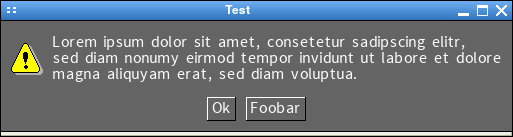
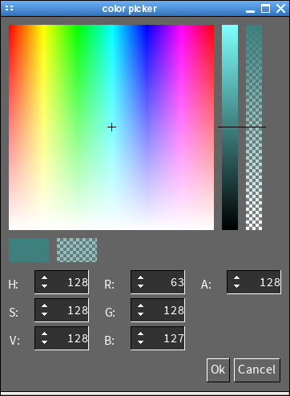

SGUI
Using the SGUI library
Dialog Windows
The sample program extras/dialogs.c illustrates the usage of dialog
windows.
Message Box

As can be seen above, a message box dialog has a multi line text, a caption,
a set of buttons and an icon displayed next to the text.
A messagebox can be created using the sgui_message_box_create function.
The following symbolic constants can be used to specify the type of icon to
display:
- SGUI_MB_INFO An speech bouble containing the letter 'i'
- SGUI_MB_WARNING A yellow triangle with an exclamation mark inside
- SGUI_MB_CRITICAL A red circle with a white 'x' inside
- SGUI_MB_QUESTION A speech bouble with a question mark inside
Along with the icon type, the caption and the text, up to 3 button captions
can be specified.
The function sgui_message_box_display makes the window of a message box
visible and moves it into the center of the screen. Unlike some operating
system message box functions, this function returns immediately. The message
box window is a normal window and needs event processing by the SGUI main
loop.
When a button gets pressed, the message box window is made invisible and one
of the following events is generated:
- SGUI_MESSAGE_BOX_BUTTON1_EVENT The first button got clicked
- SGUI_MESSAGE_BOX_BUTTON2_EVENT The second button got clicked
- SGUI_MESSAGE_BOX_BUTTON3_EVENT The third button got clicked
- SGUI_DIALOG_REJECTED The window got closed without
clicking any button
When a message box is no longer needed, the sgui_message_box_destroy
function has to be used to free the resources allocated
by sgui_message_box_create.
In some critical sitations (e.g. sgui_init fails), a kind of
"emergency message box" is required. A message box that
always works even if the entire SGUI library is in an undefined state.
For this purpose, the sgui_message_box_emergency function can be used
that creates a message box by directly using the underlying window system
functions (e.g. MessageBox on windows, or a minature Xlib based
implementation on X11 with its own event loop).
The sgui_message_box_emergency only takes two parameters, the caption
and the text to display. The function displays a simple message box with a
button labeled "OK".
The function does not return until the message box window has been
closed.
Color picker dialog

The color picker dialog can be used to let a user select a 32 bit color value,
either in RGBA or HSVA color space.
The top half of the image above shows the sgui_color_picker widget,
specifically designed for the color dialog, but it may also be used
otherwise.
The function sgui_color_dialog_create is used to create a color-picker
dialog. It takes three arguments:
- The caption of the dialog window
- The caption of the accept button
- The caption of the reject button
Similar to the message box, the function sgui_color_dialog_destroy
destroys the color-picker dialog and the function
sgui_color_dialog_display is used make the dialog window visible.
The color currently selected by the dialog can be changed using the functions
sgui_color_dialog_set_rgba for RGBA color space and
sgui_color_dialog_set_hsva for HSVA color space.
The color-picker dialog can fire the following events:
- SGUI_DIALOG_REJECTED when the dialog window got closed or the reject
button got pressed.
- SGUI_COLOR_SELECTED_RGBA_EVENT when the accept button gets pressed.
The RGBA color gets sent along in the color argument of the event
structure.
- SGUI_COLOR_SELECTED_HSVA_EVENT when the accept button gets pressed.
The HSVA color gets sent along in the color argument of the event
Previous
Back to index
Next